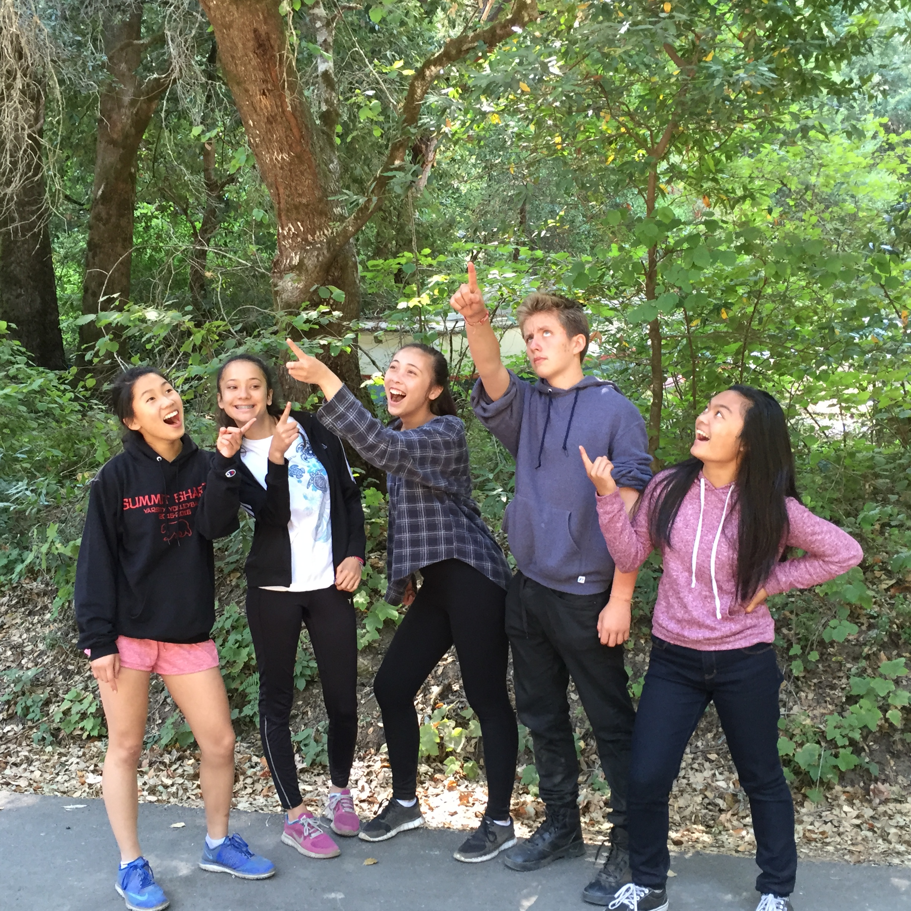

About Me
Expeditions 2016-2017
Welcome to my website!
-


Introduction
|
Hello there, and welcome to my website! My name is Christine Co and I am a 10th grader at Summit Shasta High
school taking the computer science expedition course. Here, I am learning how to create a webpage and, primarily, the basics of coding. Through my website I hope to teach you about what I have been learning during this course, as well
as a little bit about myself.
|
Where I am From
| I am from Brisbane, California--a small town in the middle of San Bruno Mountain--but on the technical side of where I come from, my family is of Chinese descent. On the other hand, the vast majority of my relatives live in the Philippines. In fact, my parents grew up and went through all of their schooling there. However, growing up in Brisbane, I attended Brisbane Elementary School and Natalie Lipman Middle School, which were the only two schools in town. After graduating Natalie Lipman Middle School, I chose to attend Summit Shasta High School and will be apart of the 3rd graduating class of the school. |
My Family
My family, along with my friends and where I come from, have also greatly impacted my life, and more specifically, who I am today. I come from a pretty big family with five other siblings plus my mom and dad. Of the six siblings in my family, I am the second oldest,
thus I have one older sister (17), two younger sisters (14 and 3), and two younger brothers (11
and 9). Being a part of a big family, I have learned to be patient and competitive, how to deal with a busy schedule, and, most of all,
how to have fun--which I think are important things to know in life in general. I consider myself very lucky to be a part of a big family and I am so grateful for them.

|
My Friends
During all my years of schooling, from elementary to being a 10th grader at Summit Shasta, I have come to meet some of my closest friends. They have played a big part in who I become today. Through all the stress from school, the embarrassing moments,
and adventures we have had together, they always seem to make life more fun and less stressful, and I am extremely thankful to have them in my life.

|
Hobbies and Interests
| Aside from school, I have taken on many different hobbies. Something that I have been doing since I was little is piano. At a very young age my grandma taught me how to read music and play the instrument and I have been playing, and forgetting how to play every song, ever since. However, more recently, a little more than a year ago, I started volleyball. It is something that I am constantly wanting to get better at, which for me has meant a tiring amount volleyball clinics. Although I have been hit in the head and fallen on the court way too many times, the sport is something I truly enjoy. Lastly, one of my more serious hobbies is art. Like piano, I have been drawing for all long as I can remember. Over the years, I have worked longs hours to improve my four year-old stick figures and transform them into realistically accurate people.Furthermore, within art, at the age of eight, I also started taking watercolor classes. Since then, I have been working on new techniques in watercolor and my drawing skills as well. |
Art Gallery
|
Here is some of the art I have created over the past couple of years. You can find more of my art, as well as my sister's, on instagram @beached_snails. Enjoy! 


|